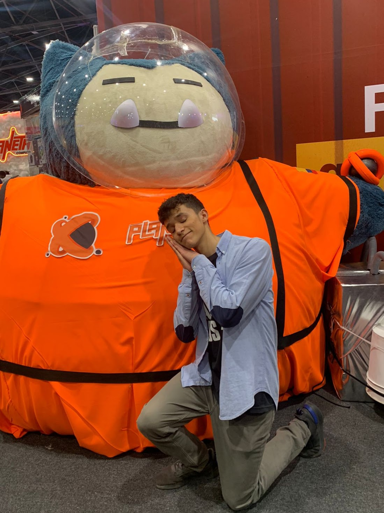
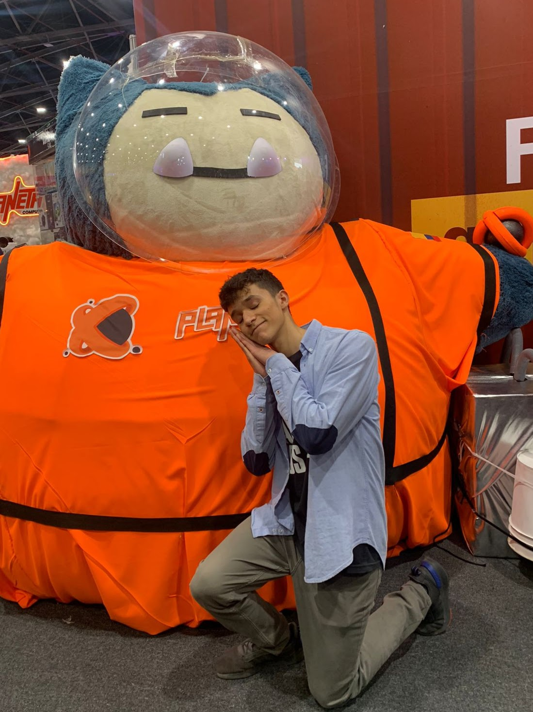
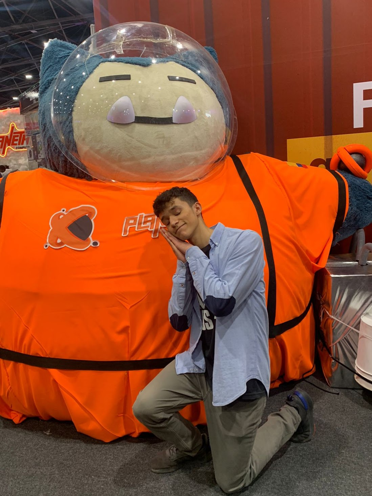

Hi, I'm Gabriel. I'm from Bogotá, Colombia, and I'm 18 years old. I'm passionate about constantly pushing myself and learning new things. In the year 2021, I decided to leave school and since then I've been studying with different online resources on areas of my interest.
I'm constantly in the urge to do things right and make the best out of every situation. I like to be methodical, organized, and thoughtful about everything I do. Although my main area of study has been computer science, I also enjoy investigating about themes like productivity, habits, and well-being factors like training and nutrition. In my free time, I like watching anime, playing some great indie video games, or trying new recipes in the kitchen.
I'm looking forward to finishing my high school education and eventually starting a CS major at a university. Right now, my focus is on continuing to expand my knowledge and find ways to apply that knowledge.
